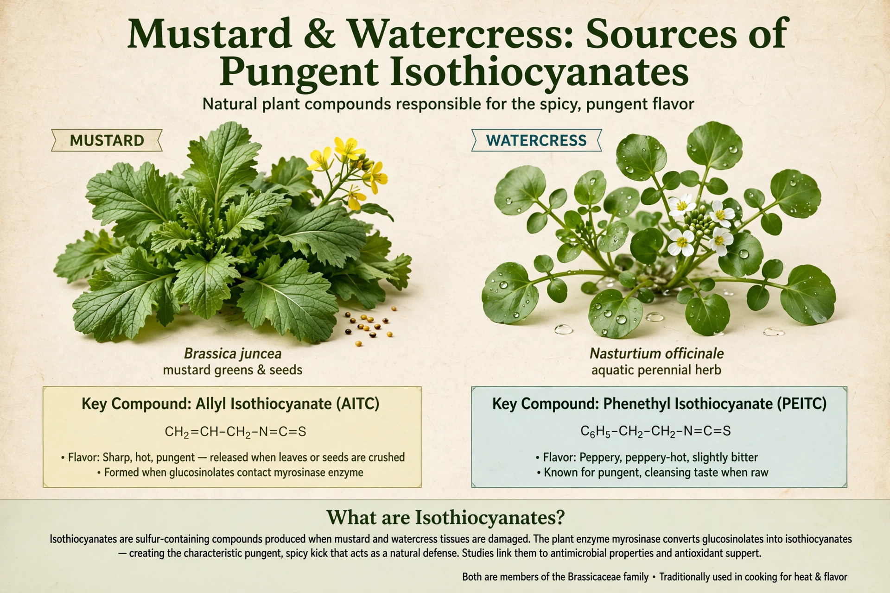

An isothiocyanate is a chemical compound containing the group –N=C=S, formed by replacing the oxygen in an isocyanate with sulfur. Many natural isothiocyanates from plants are produced by enzymatic conversion of glucosinolates.
Allyl isothiocyanate gives mustard, horseradish, and wasabi their pungency; sulforaphane from broccoli has been widely studied in nutrition research. These compounds deter herbivores and pathogens.
Isothiocyanates are commonly prepared from primary amines using carbon disulfide or thiophosgene substitutes. They react with amines to give thioureas, a reactivity exploited in Edman degradation of proteins (phenyl isothiocyanate).
Dietary isothiocyanates are investigated for antimicrobial and possible anticancer properties, though clinical evidence remains preliminary.